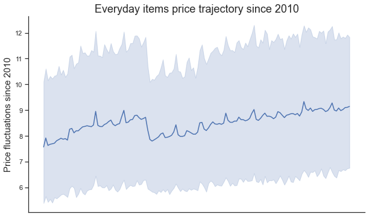
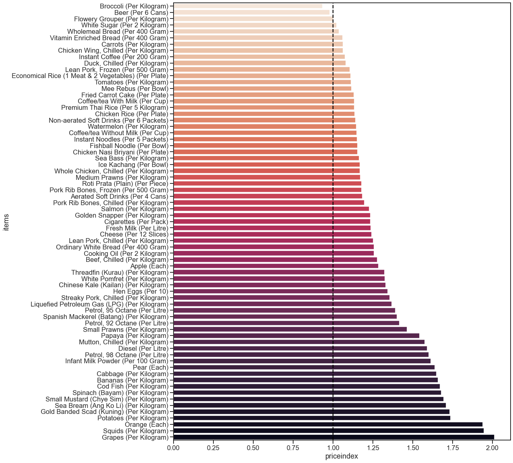
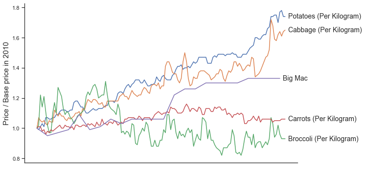
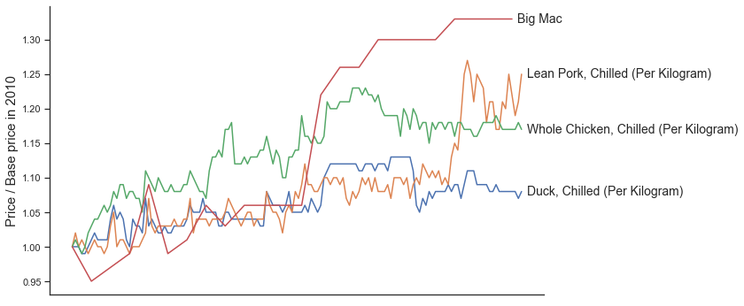
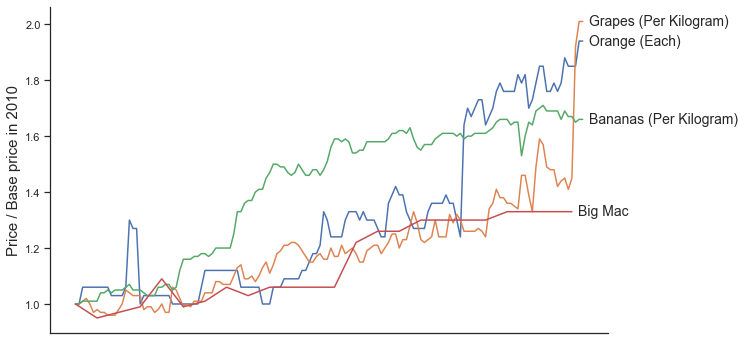
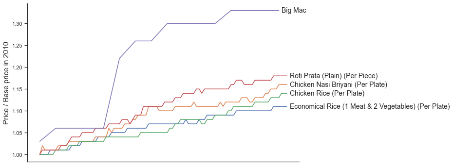
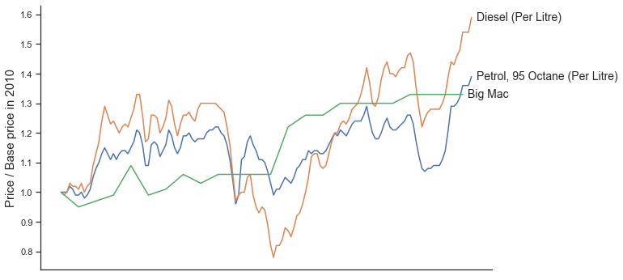
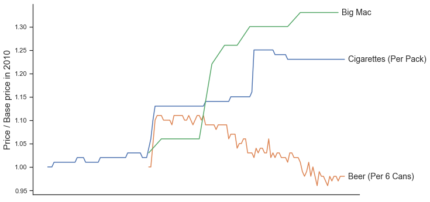

10 years of consumer price index
10 years is a long time for prices to grow. We all expect to see inflation happening, however the upward trend does not apply evenly across all basket items. Referencing The Economist's Big Mac Index, let's take a look at the price inflation of the Big Mac over the past 10 years as a benchmark. If we as a society are okay with paying for a Big Mac despite multiple price increases, won't the same apply to our everyday items?
TLDR; Insights
- 1. Inflation does not happen evenly across all basket items
- 2. Groceries: While we see increased prices across raw vegetables, meat, fruit, this does not translate directly to food available at local coffeeshops
- 3. Fuel: Car has widely been claimed as a high expenditure item, turns out the fuel which powers the car can experience much high volatility in pricing.
- 4. Lifestyle: Cigarettes and Beer are largely declining in price over time, which suggests competitive players within the same market driving prices down, less demand locally.
Overview of Singapore's monthly retail prices of selected goods
The chart represents the today's price of Singapore's basket items with 2010's original price as a base. When we look at the entire list of 69 basket items individually, it is clear that only 2 items (Broccoli and Beer) have maintained/reduced in price. Meanwhile, Grapes in particular have doubled in price in the past decade.
Everyday Groceries
In the vegetable category, we observe that some items exceed Big Mac's inflation, some items fall below Big Mac's inflation
In the meat category, we observe that all items fall below Big Mac's inflation
In the fruits category, we observe that all items exceed Big Mac's inflation
In the coffeeshop food category, we observe that all items fall below Big Mac's inflation, even maintaining a flat trajectory
Lifestyle Purchases
In the fuel category, we observe that prices are extremely volatile with high variances
In the lifestyle category, we observe that all items fall below Big Mac's inflation, even reducing in price over time. This suggests that there are other factors in play, potentially higher competitive pressures or less demand locally
Conclusion
This analysis takes the Big Mac Index as an inspiration to benchmark Singapore's local inflation rate against McDonald's franchises to keep their business margins. It serves as a good way to evaluate which basket items are exceeding regular inflation or are highly regulated. Interestingly, it appears that the higher raw food material price hikes have not been passed down to consumers as expected. At the same time, lifestyle items such as cigarettes and beer are seeing reduced prices over time. It might be worth investigating why this is the case as a follow-up project.
Methodology and Data Sources
Leveraging Data.gov.sg open data source Average Retail Prices Of Selected Consumer Items, Monthly. Average prices compiled are based on monthly retail prices of selected goods and services collected from a wide range of retailers and service providers commonly patronised by resident households;
Leveraging The Economist's Big Mac Index. Big Mac prices are from McDonald’s directly and from reporting around the world;